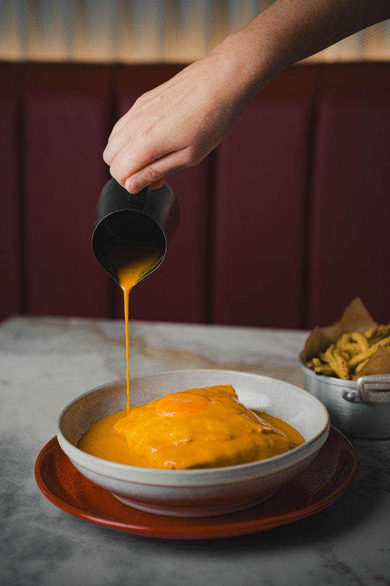

Francesinha

Descrição
A Francesinha é um prato típico da cidade do Porto, em Portugal. É uma sanduíche recheada com carnes variadas, coberta com queijo e um molho especial à base de tomate e cerveja.
Foi criado originalmente na cidade do Porto, por Daniel Silva, um chef de cozinha português que retornava de França à sua
terra natal.
Ingredientes
- Pão de forma
- Carne de vaca / porco / frango
- Fiambre
- Queijo
- Presunto
- Enchidos (salsicha fresca)
- Molho (maizena, tomate, cerveja, Martini e especiarias)
- Batatas fritas
Etapas
-
Preparar o molho: misturar maizena, tomate, cerveja, Martini e especiarias em uma panela e cozinhar até engrossar;
- Grelhar a carne, o fiambre e os enchidos;
-
Montar a Francesinha: colocar uma fatia de pão, adicionar a carne, o fiambre, os enchidos e cobrir com queijo;
- Adicionar o presunto;
- Levar ao forno para gratinar o queijo;
-
Servir a Francesinha com o molho por cima fazendo-se acompanhar com batatas fritas.
Página Inicial